Case study: A MOOC discussion forum as a temporal network
Source:vignettes/ch17-temporal-networks.Rmd
ch17-temporal-networks.RmdThis vignette demonstrates temporal network analysis of participant interactions in a massive open online course (MOOC) discussion forum. Following the analytical framework presented by Saqr (2024) in Learning Analytics Methods and Tutorials, it examines changes in network structure, participants’ structural positions, reachability through time-respecting paths, and interaction patterns between participants with different experience levels.
Data
This vignette uses the MOOC discussion-forum dataset analysed in Saqr
(2024). It records timestamped interactions between participants and
includes their experience levels. The data are available in Dynet as
mooc_posts, containing the interactions, and
mooc_people, containing participant attributes.
In mooc_posts, sender and
receiver identify the relational endpoints,
timestamp records when the message was posted, and
discussion identifies its thread. In
mooc_people, experience is coded as 1 for expert, 2 for
student, and 3 for teacher, with corresponding labels in
expert_level.
library(Dynet)
head(mooc_posts)
#> sender receiver timestamp
#> 1 360 444 2013-04-04 16:32:00
#> 2 356 444 2013-04-04 18:45:00
#> 3 356 444 2013-04-04 18:47:00
#> 4 344 444 2013-04-04 18:55:00
#> 5 392 444 2013-04-04 19:13:00
#> 6 219 444 2013-04-04 19:16:00
#> discussion
#> 1 Most important change for your school or district?
#> 2 Most important change for your school or district?
#> 3 DLT Resources—Comments and Suggestions
#> 4 Most important change for your school or district?
#> 5 Most important change for your school or district?
#> 6 Most important change for your school or district?
head(mooc_people)
#> name experience expert_level
#> 1 1 1 Expert
#> 2 2 1 Expert
#> 3 3 2 Student
#> 4 4 2 Student
#> 5 5 3 Teacher
#> 6 6 1 ExpertConstructing the temporal network
dynet() constructs a temporal network from the MOOC
reply data. The supplied variables sender and
receiver identify the relational endpoints, while
timestamp records when each reply was posted. Setting
thread = "discussion" represents each reply relationship as
a relational spell.
The duration of a relational spell represents the period during which the discussion remained active through replies and further interactions. Each spell begins when a reply is posted and ends with the last recorded interaction in the same discussion. This models the reply relationship as part of an ongoing discussion in which contributions continued to be addressed and responded to, following Saqr and Nouri (2020).
The constructor derives start from the reply timestamp,
end from the last recorded timestamp in its discussion, and
calculates duration = end - start. These variables are
created during construction rather than supplied in
mooc_posts. The nodes argument adds
participant attributes from mooc_people, including
expert_level, while time_unit = "days"
expresses elapsed time in days.
dn_full <- dynet(mooc_posts, from = "sender", to = "receiver",
time = "timestamp", thread = "discussion",
nodes = mooc_people, time_unit = "days",
min_thread_posts = 2)
#> Dropped 86 self-loop event(s). Use loops = TRUE to keep them.
#> Dropped 37 thread(s) with fewer than 2 post(s), 37 post(s) in all.
summary(dn_full)
#> property value
#> 1 format threaded
#> 2 directed yes
#> 3 vertices 441
#> 4 edge spells 2406
#> 5 distinct pairs 1907
#> 6 time unit days
#> 7 observed from 0
#> 8 observed to 72.01111
#> 9 span 72.01111
#> 10 bin width 1
#> 11 time bins 73
#> 12 mean snapshot density 0.0035
#> 13 temporal density not computed
#> 14 sessions none
#> 15 vertex attributes experience, expert_levelThe call explicitly identifies the sender, receiver, and timestamp
columns. Because sender, receiver, and
timestamp are recognised aliases, the from,
to, and time arguments could be omitted here.
Alias matching is case-insensitive. Explicit column specification is
needed only when names do not match recognised aliases or their intended
interpretation is ambiguous.
The analysis focuses on exchanges between different participants
within discussions containing more than one post. Self-replies connect a
participant to themselves and are excluded by the default
loops = FALSE. Setting min_thread_posts = 2
also excludes discussions with fewer than two posts remaining after
self-replies have been removed. These filtering choices follow the
chapter’s preparation of the interaction data; they are not requirements
for constructing a temporal network. Here, they remove 86 self-replies
and 37 single-post discussions, leaving 2,406 posts across 299
discussions.
The resulting temporal network contains 441 vertices and 2,406 relational spells connecting 1,907 distinct ordered pairs of participants. The number of spells exceeds the number of pairs because participants may reply to the same person more than once. The observation period extends from day 0 to day 72.01. Mean snapshot density is 0.0035 across 73 one-day intervals, indicating that approximately 0.35% of possible directed connections are present in an average interval.
Following the chapter, the subsequent analysis uses a smaller
subnetwork to make the visualisations easier to interpret.
induce_subgraph() retains participants whose degree exceeds
20 in the network aggregated over the observation period, together with
the relational spells connecting those participants.
dn <- induce_subgraph(dn_full, degree > 20)
dn
#> # Temporal network (threaded format, directed) | a cograph netobject
#> # 45 vertices | 686 edge spells | 428 distinct pairs
#> # observed from 0.1138889 to 72.01111 days, binned every 1
#> # vertex attributes: experience, expert_level
#>
#> from to start end duration weight
#> 219 444 0.1138889 69.47778 69.36389 1
#> 310 444 0.1680556 68.38681 68.21875 1
#> 19 310 0.2784722 14.10486 13.82639 1
#> 19 444 0.2909722 69.47778 69.18681 1
#> 30 444 0.8791667 69.47778 68.59861 1
#> 30 444 0.8819444 68.38681 67.50486 1
#> thread
#> Most important change for your school or district?
#> Submitting Questions for the Expert Panel
#> How important is teacher training in a digital learning transition phase?
#> Most important change for your school or district?
#> Most important change for your school or district?
#> Submitting Questions for the Expert Panel
#> # 680 more spells. summary() describes the network; plot() draws it.The selected subnetwork contains 45 vertices, 686 relational spells,
and 428 distinct ordered pairs, spanning day 0.11 to day 72.01. The
first spell illustrates the discussion-based duration: participant
219 replied to participant 444 on day 0.11,
and the spell continues until day 69.48, when the last interaction in
that discussion was recorded.
The analyses below describe this selected subnetwork. Their results therefore characterise relationships among the retained participants rather than the full MOOC forum.
Visualisation
The aggregate network displays all participant pairs connected during
the observation period. It provides an overview of the relationships
among the selected participants, but does not show when those
relationships were active. Setting type = "network"
produces this view.
plot(dn, type = "network")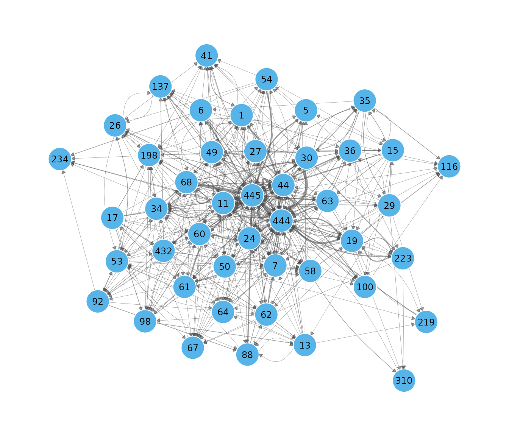
Snapshots show how connectivity changes over time. The following call displays four one-day intervals spaced across the observation period. A shared layout keeps participants in the same positions, making changes in their connections easier to compare.
plot(dn, type = "snapshots", panels = 4)
#> Drawing 4 of 72 bins, evenly spaced across the window.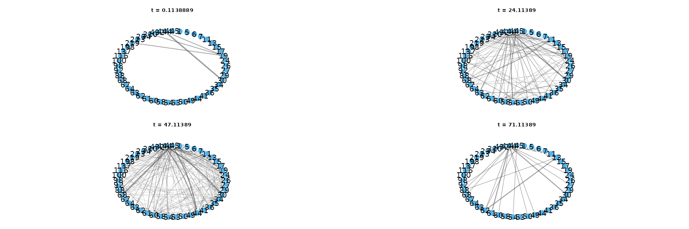
snapshots() also returns the connections within
specified intervals in tidy format. The following call requests weekly
windows beginning on days 1, 8, 15, and 22. Setting both
step and window to 7 produces non-overlapping
seven-day intervals.
weekly <- snapshots(dn, start = 1, end = 22, step = 7, window = 7)
summary(weekly)
#> time ties nodes weight
#> 1 1 58 29 75
#> 2 8 95 38 128
#> 3 15 137 41 193
#> 4 22 154 44 210The summary reports ties, the number of distinct
connected pairs; nodes, the number of participants with at
least one active tie; and weight, the summed weights of
active spells. Because the reply data have unit weights, the latter
counts active spells.
The window beginning on day 1 contains 58 connected pairs among 29 participants, compared with 154 pairs among 44 participants in the window beginning on day 22. These counts include relationships initiated earlier that remain active because their discussions continue to receive interactions. They therefore describe connectivity within each window, rather than only replies posted during that week.
The activity timeline shows when relationships between participant
pairs are active. Setting top = 25 displays the 25 pairs
with the most relational spells. For each pair, colour represents the
proportion of a time bin during which at least one spell is active,
counting overlapping spells once.
plot(dn, type = "timeline", top = 25)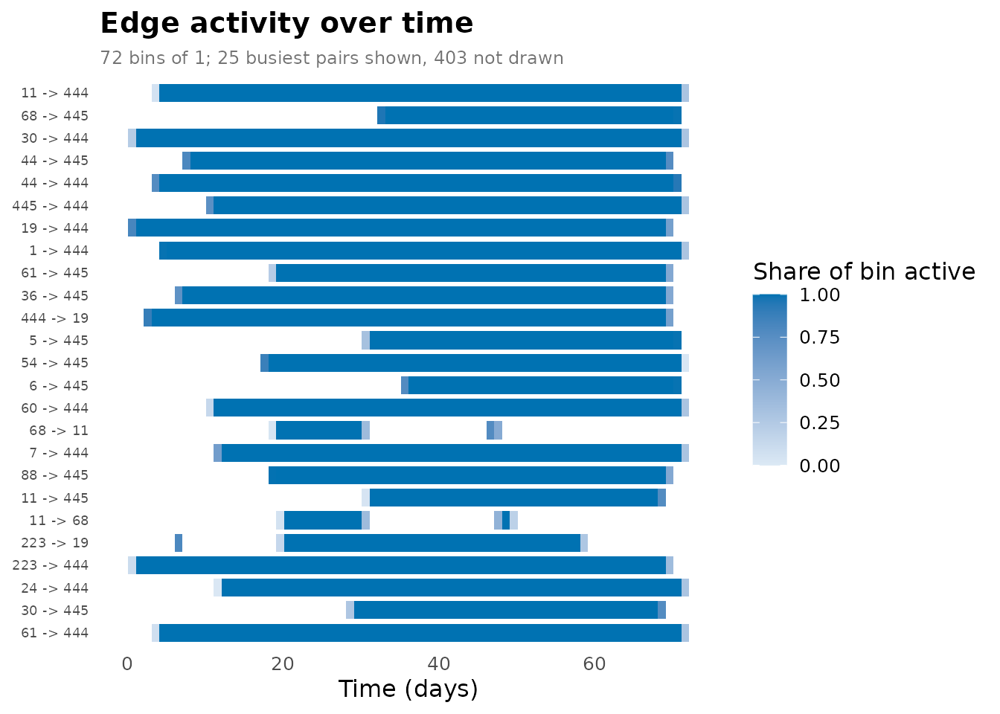
events() counts relational spell onsets and terminations
within successive intervals. The following call requests daily counts
through "formation" and "dissolution". In this
threaded network, formation corresponds to a reply being posted, while
termination occurs at the last recorded interaction in its
discussion.
turnover <- events(dn, measure = c("formation", "dissolution"),
start = 0, end = 72, step = 1, window = 1)
summary(turnover)
#> measure n mean sd min max peak_time
#> 1 dissolution 73 9.39726 15.96414 0 99 69
#> 2 formation 73 9.39726 8.60029 0 40 46
plot(turnover)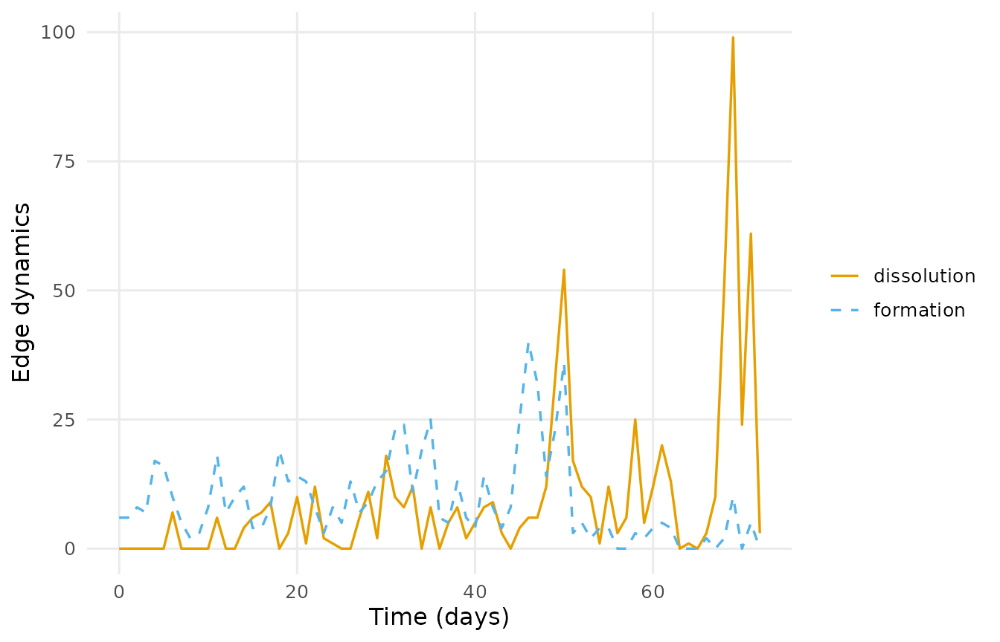
On average, 9.4 spells begin and 9.4 terminate per day. Formation peaks at 40 spells on day 46, while termination peaks at 99 on day 69. Multiple spells can terminate together because replies belonging to the same discussion share its termination time. These counts describe relational spells, so the termination of one spell does not necessarily disconnect a participant pair if another spell remains active.
The proximity timeline summarises changes in participants’ network positions. Within each temporal slice, shortest-path distances are calculated and represented along a single axis. Lines connect each participant’s positions across slices. Participants separated by shorter network distances are positioned closer together, allowing changes in clusters and relationships to be followed over time.
plot(dn, type = "proximity", slices = 20)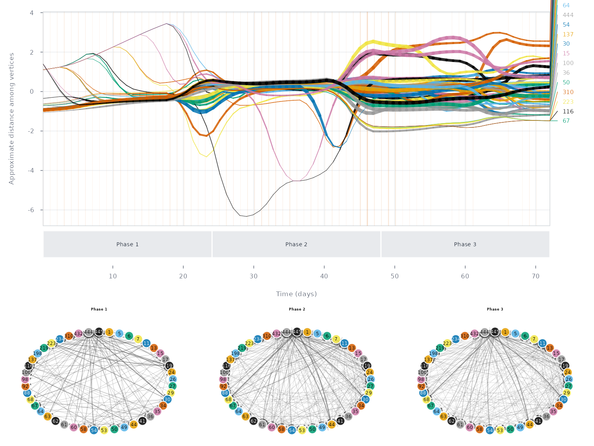
Here, slices = 20 specifies the number of temporal
slices. Proximity reflects network distance within a slice; it does not
necessarily indicate a direct interaction between two participants.
Structure over time
Graph-level measures describe how the network’s overall structure changes during the observation period. Density measures the proportion of possible directed connections that are present. Calculating density over successive windows shows whether relationships become more widespread or more restricted over time.
The temporal settings determine which relationships contribute to
each measurement. start and end specify the
measurement range, step determines the interval between
measurements, and window determines the period covered by
each value. The following call calculates density daily, using a
seven-day window beginning at each measurement time:
weekly_density <- metrics(dn, measure = "density",
start = 14, end = 60, step = 1, window = 7)
summary(weekly_density)
#> measure n mean sd min max peak_time
#> 1 density 47 0.1006233 0.02149729 0.06616162 0.1393939 45
plot(weekly_density)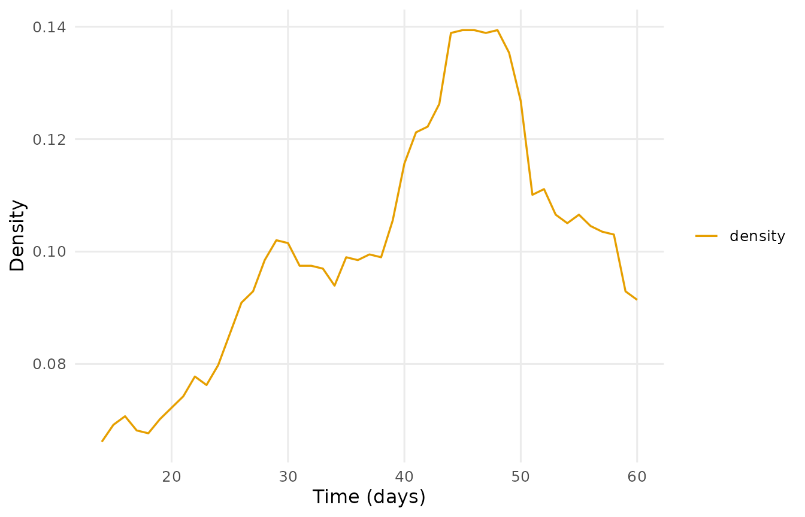
Because window = 7 exceeds step = 1,
successive windows overlap. Across the 47 windows, density averages
0.101 and ranges from 0.066 to 0.139. The maximum occurs in the window
beginning on day 45. These values describe connections active during
each seven-day period, including spells that began earlier and remained
active.
Aggregate density and temporal density summarise different aspects of connectivity. Aggregate density records whether each pair was connected at any time during the observation period, regardless of duration. Temporal density accounts for how long pairs were connected, expressing total connected-pair duration relative to the maximum possible over the period. Overlapping spells between the same endpoints contribute once to their connected duration.
scalars <- metrics(dn, measure = c("edges", "density", "temporal_density"),
window = "all")
scalars
#> # Graph structure (graph-level)
#> # 1 time points, 71.89722 per bin | time in days
#> # measures: edges, density, temporal_density
#> time measure value
#> 0.1138889 edges 428.00000000
#> 0.1138889 density 0.21616162
#> 0.1138889 temporal_density 0.06348315The 428 connected pairs yield an aggregate density of 0.216. Temporal density is 0.063, indicating that these connections were active for only part of the observation period. The difference illustrates how aggregating all relationships can obscure periods when connectivity was lower.
Reciprocity describes the extent to which directed relationships are
returned. A connection from A to B is reciprocated when the reverse
connection from B to A is also present in the measurement window. With
measure = "reciprocity", metrics() returns the
proportion of directed ties that have a corresponding reverse tie.
The following calculation uses the full network,
dn_full, rather than the selected subnetwork. It measures
reciprocity within successive one-day intervals.
reciprocity <- metrics(dn_full, measure = "reciprocity",
start = 1, end = 73, step = 1, window = 1)
summary(reciprocity)
#> measure n mean sd min max peak_time
#> 1 reciprocity 73 0.1509793 0.04198243 0 0.2178218 47
plot(reciprocity)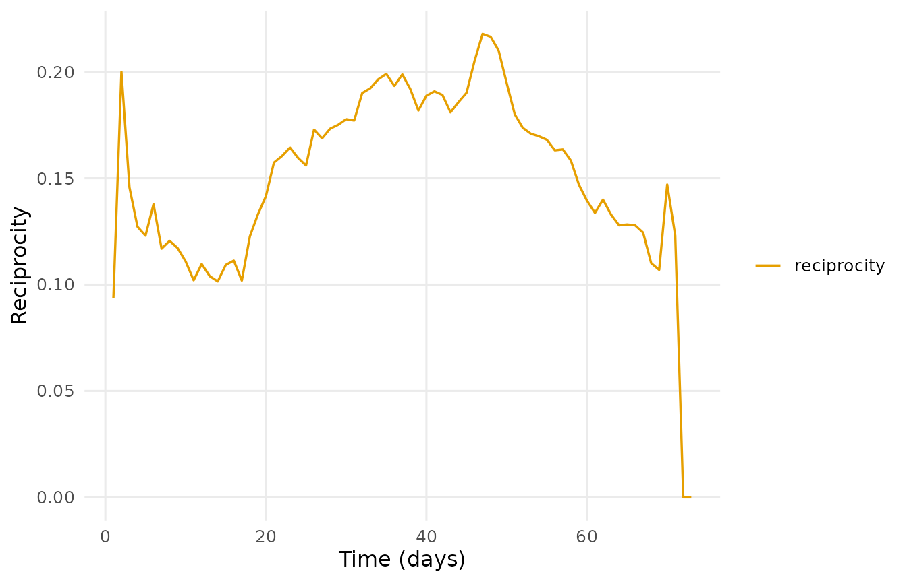
Reciprocity averages 0.151 across the 73 intervals and reaches 0.218 in the interval beginning on day 47. Thus, approximately 15.1% of active directed ties are reciprocated in an average daily interval. These values describe the presence of relationships in both directions, rather than whether individual messages received a reply.
The dyad census provides a complementary description by classifying each unordered pair of distinct participants. A mutual dyad contains ties in both directions, an asymmetric dyad contains a tie in only one direction, and a null dyad contains neither. Unlike reciprocity, which reports a proportion of directed ties, the census counts participant pairs in each category.
dyad_census <- metrics(dn, measure = c("mutual", "asymmetric", "null"),
start = 0, end = 72, step = 1, window = 0)
summary(dyad_census)
#> measure n mean sd min max peak_time
#> 1 asymmetric 73 81.49315 37.31366 0 137 51
#> 2 mutual 73 20.97260 12.66225 0 46 48
#> 3 null 73 887.53425 47.64833 817 990 0
plot(dyad_census)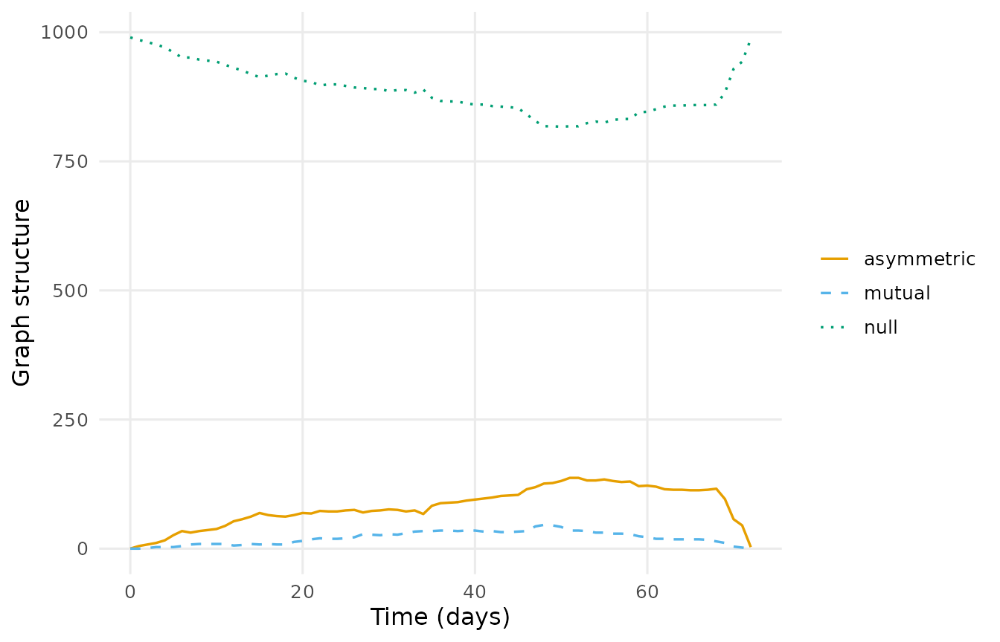
Here, window = 0 evaluates connections at individual
time points, sampled one day apart. The 45 participants in
dn form 990 unordered pairs, all classified as null at time
0. Across the 73 sampled instants, an average of 21.0 pairs are mutual
and 81.5 are asymmetric. The number of mutual pairs peaks at 46 on day
48.
Degree centralisation describes how unevenly connections are distributed across the network (Freeman, 1979). It compares each participant’s degree with the highest degree in the network and summarises these differences relative to a theoretical maximum. Centralisation is zero when all participants have equal degree; higher values indicate that connections are concentrated around participants with higher degree. Unlike degree centrality, which describes an individual participant, centralisation describes the network as a whole.
centralisation <- metrics(dn, measure = "centralization_degree",
start = 1, end = 73, step = 1, window = 1)
summary(centralisation)
#> measure n mean sd min max peak_time
#> 1 centralization_degree 73 0.3789387 0.1104169 0 0.5081924 31
plot(centralisation)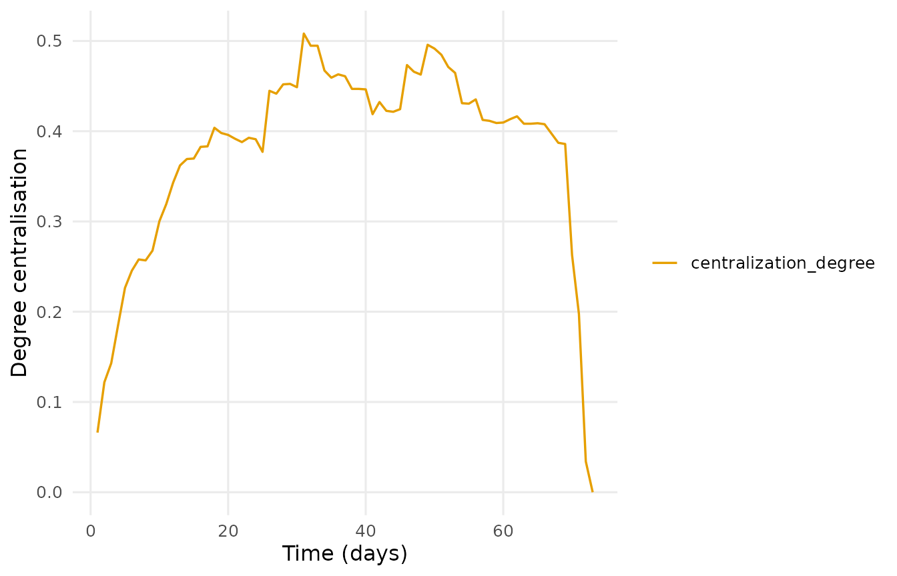
Daily degree centralisation averages 0.379 and peaks at 0.508 in the interval beginning on day 31. This peak identifies the interval with the greatest concentration of degree under the specified calculation.
Participants
Vertex-level centrality measures describe participants’ positions within the discussion network. Degree counts direct connections. Because ties run from the sender of a reply to its receiver, indegree counts the participants from whom a person has incoming connections, while outdegree counts the participants to whom they have outgoing connections. Total degree adds indegree and outdegree; a reciprocated relationship therefore contributes to both.
The following call computes all three measures within successive
daily intervals. Setting by = "measure" summarises each
measure across participants and measurement times.
degree_series <- centrality_series(dn, measure = "degree",
mode = c("all", "in", "out"),
start = 1, end = 73, step = 1, window = 1)
summary(degree_series, by = "measure")
#> measure n mean sd min max peak_time
#> 1 degree 3285 5.765601 7.273446 0 52 49
#> 2 degree_in 3285 2.882801 5.477055 0 35 50
#> 3 degree_out 3285 2.882801 2.706619 0 19 31Mean total degree is 5.77 per participant per daily interval, with a maximum of 52 on day 49. Indegree and outdegree both average 2.88, as every directed tie contributes once to each. Their maxima differ: indegree reaches 35 on day 50, whereas outdegree reaches 19 on day 31. The highest incoming degree therefore involves more distinct replying participants than the highest outgoing degree involves distinct recipients.
The following plot displays the degree trajectories of the ten
participants selected by top = 10:
degree <- centrality_series(dn, measure = "degree",
start = 1, end = 73, step = 1, window = 1)
plot(degree, top = 10)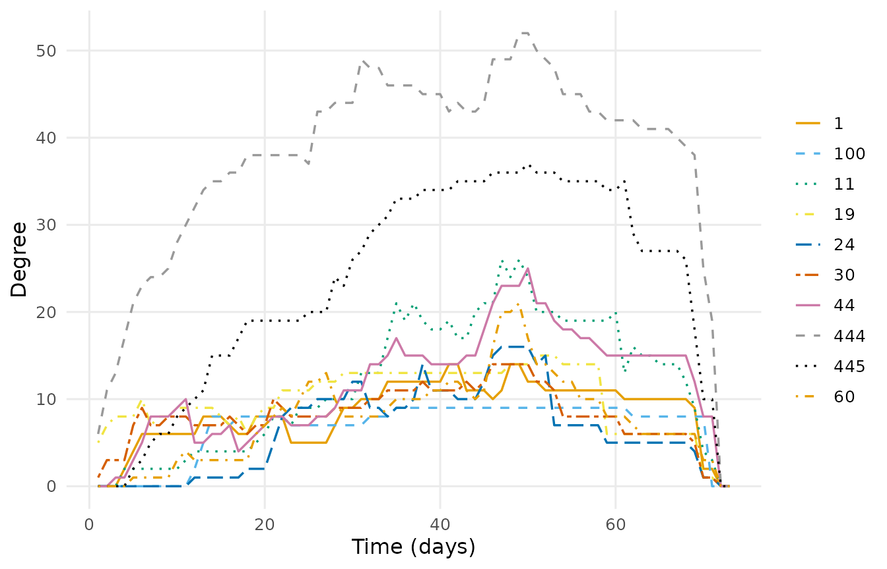
Closeness, betweenness, and eigenvector centrality describe different aspects of participants’ positions in the network (Freeman, 1979; Bonacich, 1987). Closeness centrality is based on shortest-path distances to other participants. Higher values indicate shorter average distances, meaning that fewer steps are required to reach others. Betweenness centrality measures the extent to which a participant lies on shortest paths between other participants, identifying potential intermediary positions. Eigenvector centrality accounts for the centrality of a participant’s neighbours, assigning higher scores to connections with other highly central participants.
The following call computes all three measures within successive one-day intervals. These calculations use the connections present within each interval; they do not trace time-respecting paths across intervals.
other_centrality <- centrality_series(dn,
measure = c("closeness", "betweenness",
"eigenvector"),
start = 1, end = 73, step = 1, window = 1)
summary(other_centrality, by = "measure")
#> measure n mean sd min max peak_time
#> 1 betweenness 3285 34.5716895 98.4872310 0 974.0571 31
#> 2 closeness 3285 0.4221442 0.2069263 0 1.0000 1
#> 3 eigenvector 3285 0.2351984 0.2028102 0 1.0000 1Across participants and daily intervals, betweenness averages 34.6 and reaches a maximum of 974.1 on day 31. Mean closeness is 0.42, and mean eigenvector centrality is 0.24; their reported maxima are both 1 on day 1. These measures have different scales and interpretations, so their numerical magnitudes should not be compared directly.
Plotting betweenness trajectories shows when participants occupy intermediary positions and how those positions change during the course.
betweenness <- centrality_series(dn, measure = "betweenness",
start = 1, end = 73, step = 1, window = 1)
plot(betweenness, top = 10)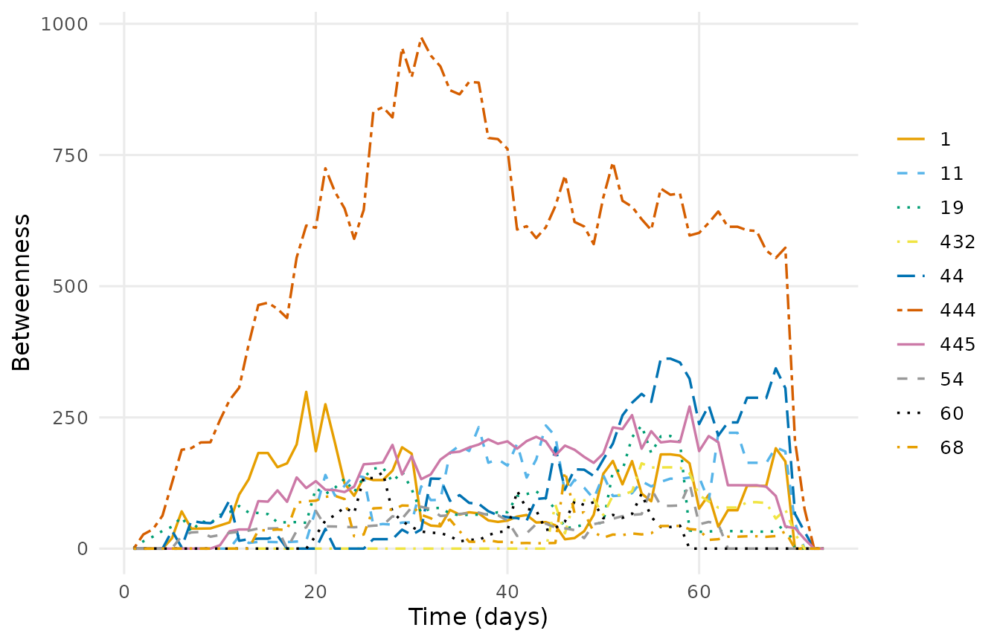
Centrality can also be calculated on the network aggregated over the full observation period. The following call returns a tidy participant table containing vertex attributes and the requested aggregate centralities:
ranked <- as.data.frame(dn, what = "nodes",
measure = c("degree", "betweenness", "eigenvector"))
head(ranked)
#> name experience expert_level degree betweenness eigenvector
#> 1 1 1 Expert 20 37.308745 0.4188396
#> 2 5 3 Teacher 10 4.222691 0.3152262
#> 3 6 1 Expert 13 4.759524 0.3337165
#> 4 7 2 Student 26 34.113923 0.5748078
#> 5 11 3 Teacher 47 180.530502 0.8963590
#> 6 13 2 Student 15 16.629447 0.4051050Among the first six participants displayed, participant
11, a teacher, has the highest degree (47), betweenness
(180.5), and eigenvector centrality (0.896). These comparisons concern
only the displayed participants. Aggregate centralities summarise
positions across the full period, whereas the daily trajectories show
when those positions emerge or change.
Reachability
Temporal reachability describes whether one participant can reach another through a sequence of interactions that follows temporal order. For example, a path from A through B to C requires the connection from B to C to be available after arrival at B. Waiting between interactions is permitted, but an earlier interaction cannot be used to continue a path that reaches B later.
paths() identifies the earliest-arrival paths from a
specified participant. It first minimises arrival time and then, among
paths arriving equally early, minimises the number of hops. A path
through several intermediaries may therefore reach its destination
before a direct connection becomes available.
The following call searches forward from participant
444:
forward <- paths(dn, from = "444", direction = "forward")
forward
#> # Time-respecting paths from '444', from t = 0.1138889
#> # reaches 44 of 44 other vertices | time in days
#> node reachable arrival_time attained latency n_hops n_paths
#> 1 TRUE 5.484028 TRUE 5.370139 2 1
#> 5 TRUE 33.213194 TRUE 33.099306 2 1
#> 6 TRUE 37.055556 TRUE 36.941667 2 1
#> 7 TRUE 11.863889 TRUE 11.750000 3 1
#> 11 TRUE 12.383333 TRUE 12.269444 1 1
#> 13 TRUE 26.195139 TRUE 26.081250 2 1
#> 15 TRUE 6.135417 TRUE 6.021528 5 1
#> 17 TRUE 20.250694 TRUE 20.136806 4 3
#> 19 TRUE 2.222222 TRUE 2.108333 1 1
#> 24 TRUE 21.067361 TRUE 20.953472 2 1
#> 26 TRUE 25.313889 TRUE 25.200000 2 1
#> 27 TRUE 21.071528 TRUE 20.957639 3 1
#> # 33 more rows. summary() aggregates them; plot() draws the tree.
summary(forward)
#> property value
#> 1 source 444
#> 2 direction forward
#> 3 reachable 44
#> 4 reachable share 1
#> 5 median latency 17.63819
#> 6 max latency 50.87431
#> 7 median hops 2
#> 8 max hops 5The result reports the earliest arrival at each participant in
arrival_time. The latency column measures
elapsed time from the search origin to arrival, including waiting
between interactions. n_hops records the number of
traversed ties, and n_paths records the number of optimal
paths. By default, traversal itself takes zero time; arrival times are
determined by when the required connections become available.
Participant 444 can reach all 44 other participants.
Participant 19 is reached in one hop after 2.11 days, while
participant 11 is reached in one hop after 12.27 days.
Participant 15 requires five hops but is reached after 6.02
days, illustrating why fewer hops do not necessarily imply earlier
arrival. Median latency is 17.6 days, and the maximum is 50.9 days. The
median path contains two hops, and the longest contains five.
These paths follow the network’s reply direction, from the replying participant to the participant addressed. They therefore describe reachability through the specified reply relationships. Interpreting them as the forward transmission of information requires this direction to match the process being modelled.
The path plot displays the routes connecting the source to reachable participants:
plot(forward, base_size = 9)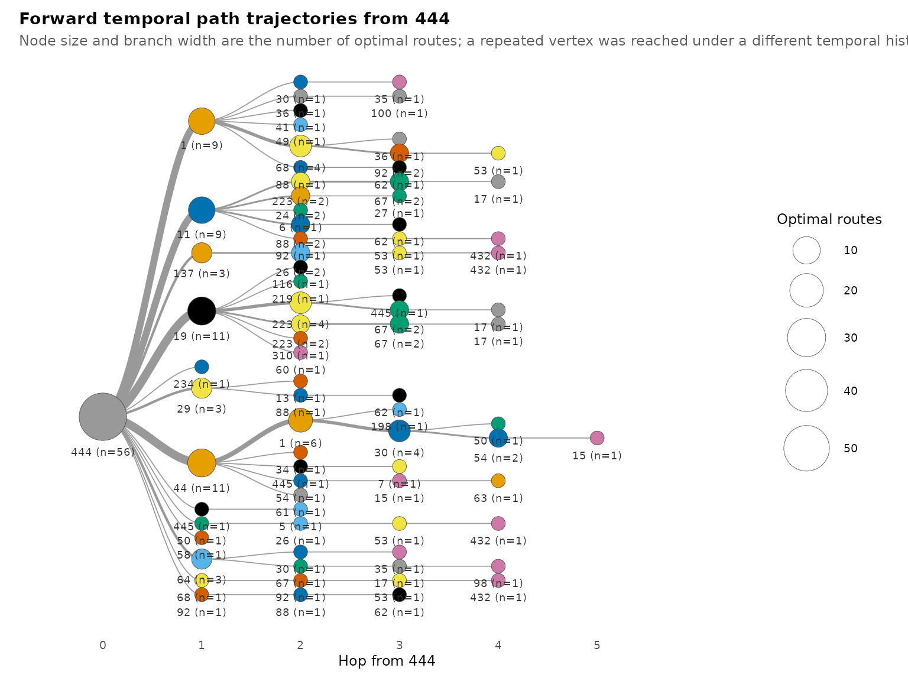
The temporal progression of these paths can be displayed using
path_trajectories() and
plot_path_trajectories(). The first function organises the
path result into a tree of trajectories. Setting
measure = "time" then positions the trajectory steps
according to their temporal values, showing when participants are
reached along each route.
tree <- path_trajectories(forward)
plot_path_trajectories(tree, measure = "time", base_size = 9)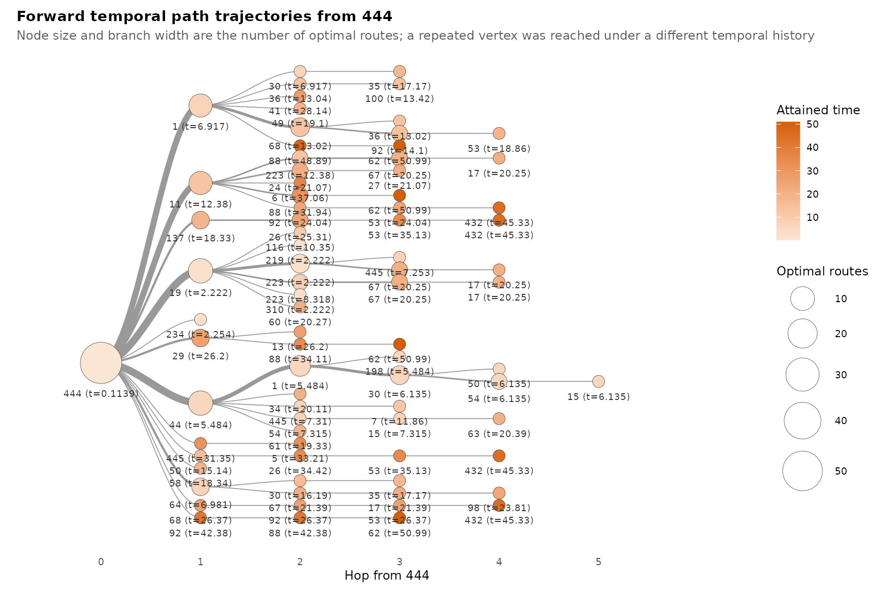
This complements the path diagram by making timing explicit. Routes with similar numbers of hops may have different arrival times because their constituent interactions become available at different points in the observation period.
Mixing between experience levels
Mixing describes the pattern of relationships within and between
categories of participants (Newman, 2003). Here, the categories are
teachers, students, and experts, recorded in expert_level.
The analysis examines how connections among these categories change over
the course—for example, student-to-student connections compared with
student-to-teacher connections.
mixing() groups active connections according to the
experience levels of their senders and receivers. The following call
computes these counts within successive one-day intervals:
mix <- mixing(dn, attribute = "expert_level",
start = 1, end = 73, step = 1, window = 1)
summary(mix)
#> measure n mean sd min max peak_time
#> 1 Expert -> Expert 73 2.890411 3.138301 0 8 54
#> 2 Expert -> Student 73 5.849315 3.703119 0 14 50
#> 3 Expert -> Teacher 73 14.315068 6.220211 0 24 55
#> 4 Student -> Expert 73 4.315068 3.620454 0 12 50
#> 5 Student -> Student 73 10.000000 4.725816 0 22 50
#> 6 Student -> Teacher 73 33.493151 14.732922 0 56 50
#> 7 Teacher -> Expert 73 5.808219 3.984893 0 14 48
#> 8 Teacher -> Student 73 16.232877 8.280701 0 35 47
#> 9 Teacher -> Teacher 73 36.821918 15.738614 0 67 49
plot(mix)
Each value counts distinct connected participant pairs within the corresponding category combination. Several active spells from the same student to the same teacher contribute one student-to-teacher connection in that interval. The counts therefore describe active relationships, rather than the number of replies posted that day. Connections included in a daily window need not all be active at the same instant.
Teacher-to-teacher connections are the most frequent, averaging 36.8 per daily interval and reaching a maximum of 67. Student-to-teacher connections average 33.5, while expert-to-expert connections average 2.9. The pattern also differs by direction: expert-to-teacher connections average 14.3, compared with 5.8 for teacher-to-expert connections. These are unnormalised counts and should be interpreted in relation to the number of participants in each category.
Interpretation
The analysis shows how the timing of relationships changes the description of the forum. In the selected subnetwork, aggregate density is 0.216, whereas temporal density is 0.063. The aggregate network therefore contains substantially more connectivity than is sustained throughout the observation period: many participant pairs are connected, but only for part of that period.
Participants’ positions also vary over time. Indegree reaches a higher maximum than outdegree, indicating that some participants receive connections from more distinct participants than any participant addresses within a daily interval. Mixing counts show frequent teacher-to-teacher and student-to-teacher relationships, although differences in category size must be considered when interpreting these counts.
Participant 444 can reach every other participant in the
selected subnetwork through time-respecting paths. However, median
latency is 17.6 days, and the maximum is 50.9 days. Complete
reachability therefore coexists with substantial waiting before some
destinations become accessible. These values describe possible traversal
of the modelled reply relationships; they do not measure the observed
transmission speed of information.
Limitations
Relational duration is defined by continued activity within a discussion: each reply relationship remains active until the discussion’s last recorded interaction. This assumption affects network density, centrality, and temporal paths. Shorter spell durations could produce fewer active connections, longer waiting times, or unreachable destinations. The assigned duration should therefore be interpreted as a model of discussion activity rather than continuous interpersonal contact.
Most analyses concern the 45 participants whose aggregate degree
exceeds 20. Their results describe relationships among these selected
participants and cannot be generalised directly to the full forum. The
reciprocity analysis explicitly uses dn_full and
consequently describes a different participant population.
Daily and weekly windows combine relationships active during the same
interval. Such relationships need not overlap at an instant, whereas
calculations with window = 0 evaluate connectivity at
specific time points. The observation period is determined from the
supplied interaction data rather than independently specified course
dates.
Finally, ties run from the replying participant to the participant addressed. Temporal paths follow this direction. Interpreting those paths as information dissemination requires a substantive justification for how the direction of reply relationships represents the process of interest.
References
Bonacich, P. (1987). Power and centrality: A family of measures. American Journal of Sociology, 92(5), 1170–1182.
Freeman, L. C. (1979). Centrality in social networks: Conceptual clarification. Social Networks, 1(3), 215–239.
Kempe, D., Kleinberg, J., & Kumar, A. (2002). Connectivity and inference problems for temporal networks. Journal of Computer and System Sciences, 64(4), 820–842.
Newman, M. E. J. (2003). Mixing patterns in networks. Physical Review E, 67(2), 026126.
Saqr, M. (2024). Temporal network analysis: Introduction, methods and analysis with R. In M. Saqr & S. López-Pernas (Eds.), Learning analytics methods and tutorials: A practical guide using R. Springer. https://doi.org/10.1007/978-3-031-54464-4_17
Saqr, M., & Nouri, J. (2020). High resolution temporal network analysis to understand and improve collaborative learning. In Proceedings of the Tenth International Conference on Learning Analytics & Knowledge (pp. 314–319). ACM.
Wasserman, S., & Faust, K. (1994). Social network analysis: Methods and applications. Cambridge University Press.